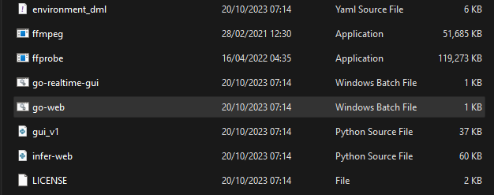
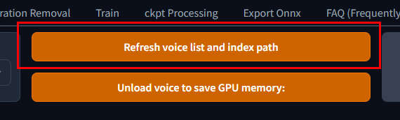
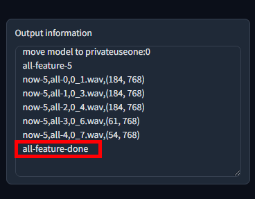

#
Mainline
Last update: July 18, 2025
#
#
Introduction
Mainline RVC is the base, original, & unmodified version of RVC. Made by the RVC-Project team. It can be called either Original/Mainline RVC.
It has less features compared to other forks, but still has the necessary tools to do a decent job.
It's specially liked because it's a little faster than other forks, as it's less bloated in a way.
Its actual name is not "Mainline", but it was given by the public to properly distinguish it from the other versions.
#
Pros & Cons
The pros & cons are subjective to your necessities.
- Easy to install.
- Simpler to use.
- Has less features.
- Doesn't include Mangio-Crepe.
- Manual model upload.
#
#
Installing & Opening Nvidia on Windows (Precompiled)
#
Go to their download page here
Click the
Downloadword. RVC will begin to download.

Once it's done, unzip the folder.
Open RVC's folder, find the "
go-web.bat" file and execute it.

It will then open a console, & after a moment your default web browser with RVC ready to be used.

(Optional) To access RVC more easily, make a shortcut of the
go-webfile.
Don't close the console until you are done using RVC, or it will stop working.
#
#
Inference
If you encounter an issue, be sure to read the Troubleshooting chapter.
#
#
1. Upload voice model.
Open RVC's folder, go to the
assetsfolder and put your model's .PTH file inside theweightsfolder.

Return to the previous folder & put the model's .INDEX file in the
logsfolder.
#
#
2. Select voice model.
In RVC, click the
Refresh voice list and index pathbutton.
In its left, click
Inferencing voice& select your model.
#
#
3. Select vocals.
In Enter the path of the audio file paste the path file of your audio. Ensure the path doesn't include spaces or special characters.
{kind=link}
#
#
4. Modify settings. (optional)
If you wish, modify the inference settings on display accordingly for better results.
#
#
5. Convert.
Click the long Convert button at the bottom & it will begin to convert.
The processing time will mainly depend on your specs, length of audio, & the algorithm picked.
#
#
6. Download output.
Once it's done processing, a playable audio will pop up in the Export audio box.
To download, click the three dots on the right & hit Download.

#
#
Training
#
NOTES:
The training guide will be centered around using TensorBoard. Read about it first if you haven't already.
If you encounter an issue, be sure to read the Troubleshooting chapter.
#
#
Step 1
#
#
1. Go to training area.
Open RVC & head over to the Train tab.

#
#
2. Name the model.
In Enter the experiment name you insert a name for your model. Don't include special characters or spaces.

#
#
3. Select Target Sample Rate.
In Target sample rate select the number that matches your datasets' sample rate.
Inputting an incorrect one might screw up the final quality.

#
#
Step 2a
#
#
4. Select dataset.
In Enter the path of the training folder paste the path file of your dataset.
Ensure the path doesn't include special characters/spaces.

If there's any text in the bar, delete it beforehand.
#
#
5. Process data.
Click the Process Data button on the center.
RVC will process the previous criteria for the training.
But also the dataset file, which might take a moment depending on how big it is.

It'll finish when the output box on the right says end preprocess.

#
#
Step 2b
#
#
6. Select GPUs.
In Enter the GPU index(es) determine which GPU(s) you'll use for training, by indicating the index followed by the dash (e.g: 0).

#
#
7. Select pitch extraction algorithm.
At the right select the Pitch extraction algorithm.
Only useRMVPE_GPUorCrepe, as the rest are obsolete.
#
Now click the
Feature extractionbutton on the right.

It'll finish when the output saysall-feature-done.
#
#
8. Create .INDEX.
Press Train feature index at the bottom center.
This will create the .INDEX file.

It'll finish when the output box says something like this:

#
#
Step 3
#
#
9. Select save frequency.
Frequency of the saving checkpoints, based on the epochs.
If you are a newbie, simply leave it at 15.
E.g: with a value of 10, they will be saved after the epoch 10, 20, 30, etc.

#
#
10. Input epochs amount.
In Total training epochs you determine the total amount of epochs (training cycles) for the model.
But since we'll use TensorBoard, use an arbitrarily large value like 2000.

#
#
11. Select batch size.
Leave Batch size per GPU at 8 if you aren't familiar with it.
If your dataset is short (around 2 minutes or less), use 4 instead.

#
#
12. Launch TensorBoard.
Now before you start training, open TB.
If you haven't already, start reading about it here here.
#
#
13. Begin training.
Start training the model by clicking Train model.

Remember to monitor TB, & also the console just in case.
The latter will show you errors if they happen, and information about the epochs & checkpoints.

#
#
14. Stop training.
When you are very sure of overtraining, you can stop training by pressing the Stop training button where Train model used to be.
#
#
15. Gather model's files.
Create a new folder anywhere named as your model.
Open RVC's folder, go to
logs, and open the folder named with the model.
Select the.INDEXnamedadded_& move it to your newly made folder.
Now go to the
weightsfolder. Here you'll find the model's checkpoints.Select the one closest to before the overtraining point, and move it to the new folder
These files will be organized with this format: ModelName_Epoch_Step.pth
Example:kalomaze_e60_s120.pth
And that's all. Have fun with your model.
To test the model, do a normal inference as usual.
#
#
Resuming
#
If the training finished but the model still needed training, you don't have to start from scratch.
Follow this procedure:
Simply enter the same settings and criteria that you previously inserted. Model name, sample rate, dataset, batch size, etc. You don't have to press
Process Dataor train the .INDEX again.You can change the save frequency, or increase the epochs amount in case you didn't input enough before.
Begin training again & remember to monitor TB & console like before.
#
#
Troubleshooting
#
#
If it's lower than 32k: select
32k.
If it's 32k: on the right in Version, press
v1& pressv2again. Ensure you leave it asv2. You should be able to see a32koption now.
If it's 44.1k: select
40k.
If i'ts higher than 48k: select
48k.
#
- This a phenomenon called artifacting. To fix it, read here.
- This is a common bug. Close the console to stop RVC entirely.
#
- Report your issue here.